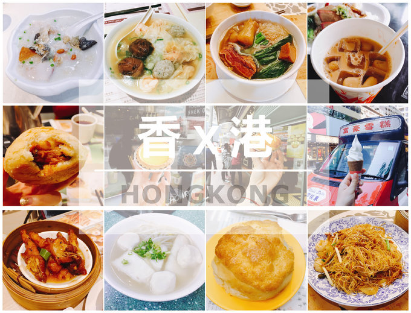
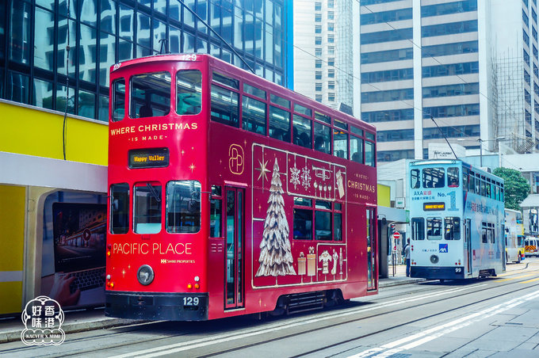
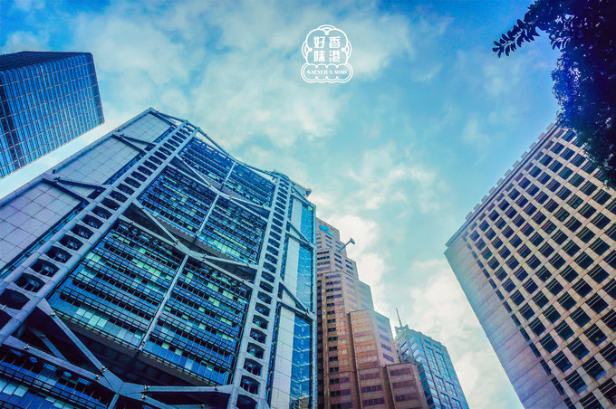
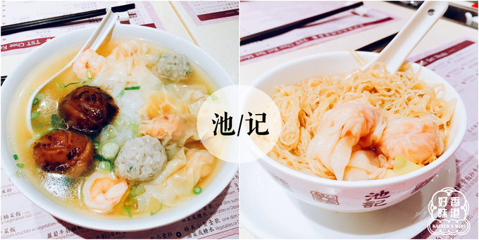
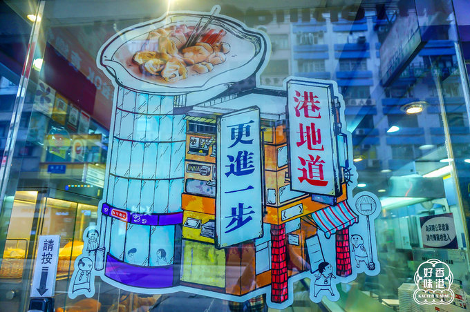
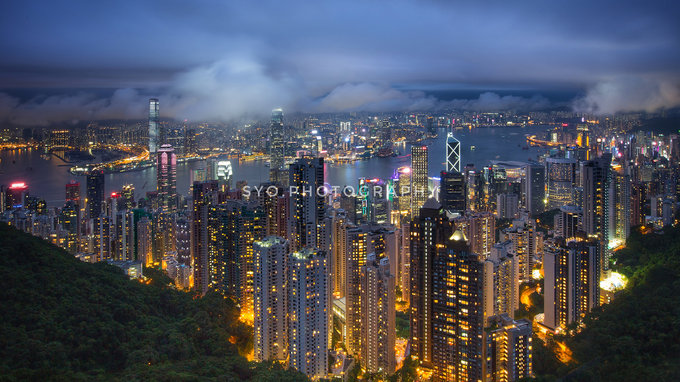

吃喝玩乐一概览。
暖暖一碗粥，一天好活力。

中国人对粥是有情结的。
早起一碗文火白粥下肚，几碟清淡小菜，整个人都精神了；
即使是在重口味的夜宵大排档，一碗内料丰富的清粥，也能很好的平衡一桌的油腻，暖胃更暖心。
这家粥店在香港的分店很多，早上10点钟入店依然要排队，算是吃了一个中式。
艇皇粥有海味的鲜美，配料丰盛，米煮得很烂，两个人分一大碗刚刚好，吃得整个人都舒服。
毕竟是主打粥品的店，比较推荐作为早餐。
*海皇粥店（油麻地店）
地址： 油麻地弥敦道497A号地下
营业时间：6：30—次日凌晨1：00
推荐：艇皇粥
人均：30元
推荐指数：★★★
PS：只收现金。

入夜后的香港，化成电影中熟悉的模样。
在油麻地的街头，和老香港撞了个满怀。
随意跳上一辆叮叮车，目的地不明。
走累了，钻进街边的茶餐厅，一杯奶茶就能融化所有烦心。
她是孩子们的游乐场，是购物狂的剁手天堂，
是吃货们的最佳觅食地，是摄影爱好者胶卷中的光影琉璃……
*迷失南丫岛，赶在日落前看一眼大风车。
除了港岛、九龙和新界，香港还有众多离岛，这里鲜有旅行团的打扰，和那些名声在外的打卡景点
相比，仿佛一座座静谧的世外桃源，散落在蔚蓝之海。
这次，我们选择了其中的一座，抽小半天的时间，远离城市的喧嚣嘈杂，去南丫岛放个空。
虽然“离岛”两个字听起来有种偏远避世之感，但其实前往南丫岛的交通非常便利。
从中环4号码头坐30分钟船，你就可以暂时和水泥森林say goodbye，投入一篇绿意盎然之中。
没有一个城市，像香港这样矛盾又纠结。
她既有光鲜亮丽的外衣，又在街头巷尾留着一丝破旧和腐坏的气息；
她的繁华令人着迷，却又用与生俱来的骄傲和高冷，让你难以亲近；
她用另一种语言、另一种体制包裹着自己，在你真正亲临这片土地之前，
一切都只是想象，而已。

香港，就是这样一座神奇的城市啊!
我们的城市，正生长得越来越相似。
一样的高楼林立，一样的车水马龙，一样的修旧如新，
只有香港，每一帧画面、每一声叹息，都是她自己。
拥挤的地下铁，步履匆匆的上班族，硕大的霓虹灯招牌……
在万千城市的剪影之中，你总能一眼就认出她，即使你们不曾有过交集。
你明知她有那么多别扭和挑剔的坏习惯和小毛病，
却还是偏偏在那么多的旅行list中，写下了她的名。

*池记：一碗云吞面的慰藉。
招牌的鲜虾云吞确实赞，拿上来很迷你的一份，四只云吞，一小碗细面，40元其实并不便宜，但
面够劲道，云吞饱满，汤里全是虾的鲜味，吃得人心满意足。
我们还点了一份五宝河粉，有虾云吞、水饺、冬菇、鲮鱼圆子等五种配料，搭配河粉，和云吞面
一比超级大一份，实在超值，两个人也吃不完，味道比较清淡~~~
池记不愧是香港云吞面界的扛把子！
*池记（尖沙咀店）
地址： 尖沙咀乐道52号地下
营业时间：10：30—23：00
个人推荐：鲜虾云吞面
人均：70元
推荐指数： ★★★★
PS：可用100元人民币代替120元港币支付，用港币找零。

幸福的味道!
*利强记北角鸡蛋仔（弥顿道店）
地址： 尖沙咀弥敦道178号地下（尖沙咀警察署对面）
营业时间：11：00—次日凌晨2：00
个人推荐：鸡蛋仔
人均：20元
推荐指数：★★★★
PS：不可使用500、1000元面值的港币支付，记得备好零钱。

香港，就是这样一座神奇的城市啊!
我们的城市，正生长得越来越相似。
一样的高楼林立，一样的车水马龙，一样的修旧如新，
只有香港，每一帧画面、每一声叹息，都是她自己。
拥挤的地下铁，步履匆匆的上班族，硕大的霓虹灯招牌……
在万千城市的剪影之中，你总能一眼就认出她，即使你们不曾有过交集。
你明知她有那么多别扭和挑剔的坏习惯和小毛病，
却还是偏偏在那么多的旅行list中，写下了她的名。